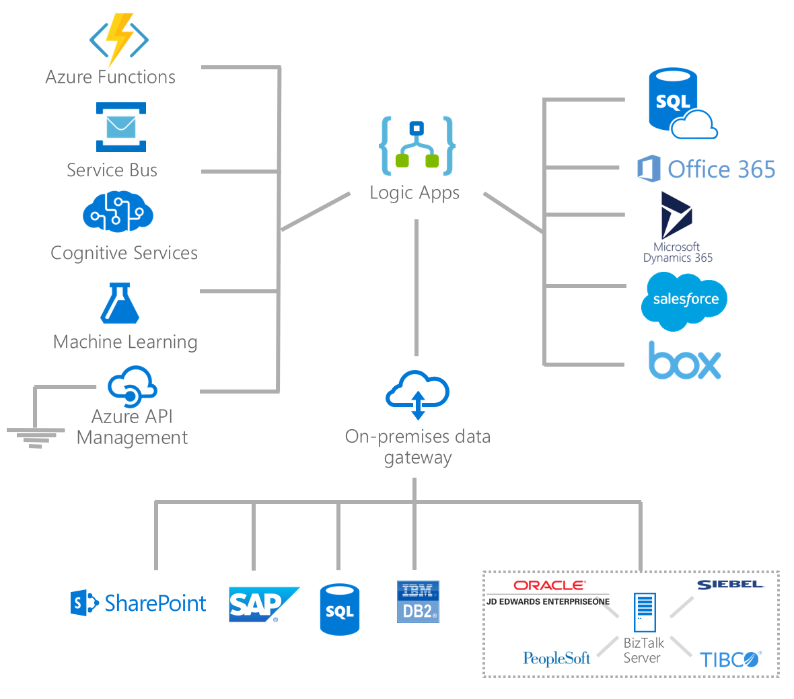
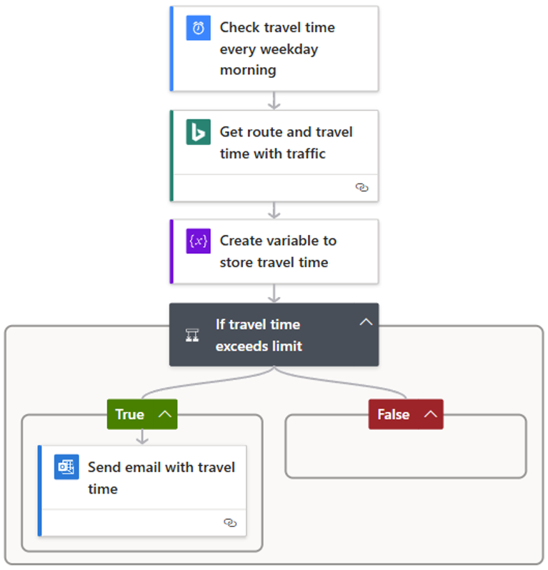

What Is Azure Logic Apps?
Azure Logic Apps is a cloud platform for creating and running automated workflows that integrate apps, data, services, and systems across cloud, on-premises, and hybrid environments.
Microsoft positions Logic Apps as workflow integration and automation for the enterprise: a low-code/no-code platform that can support everything from zero-code workflows to more customized integration solutions. It reduces how much custom code teams need when they must connect SaaS products, Azure services, APIs, data sources, and on-premises systems. The service is especially strong when the problem is not a single computation, but the managed sequence around that computation.
Use Logic Apps when the main job is orchestration: receiving an event, applying business rules, calling services, shaping data, and moving the result to the next system without building custom plumbing for every step. Workflows start with one trigger and continue with actions, while conditions, switches, loops, scopes, and parallel branches control the path through the process.


Designer-first workflowing
Teams can build in the visual designer, then manage the underlying JSON definition and deployment artifacts like any other Azure resource.
Connector-driven integration
Logic Apps includes a large connector ecosystem plus built-in operations for HTTP, data manipulation, control flow, scheduling, and custom extensibility.
Flexible hosting models
Workflows can run in multitenant Consumption or single-tenant Standard environments, depending on scale, networking, isolation, and operational requirements.
Why Teams Use Logic Apps
Integrate quickly with 1,400+ connectors
Connect SaaS apps, Azure services, databases, file systems, and enterprise platforms without building one-off integration adapters for every system.
Use built-in and managed operations
Built-in operations run natively in the Logic Apps runtime for workflow control and data handling, while managed connectors provide Microsoft-hosted access to external services and systems.
Reduce connector maintenance work for pro-developers
Instead of constantly updating custom integration code as external providers change APIs and connector behavior, teams can rely on the Logic Apps platform and managed connectors to handle most of that ongoing integration maintenance.
Start low-code/no-code, extend with code
Many workflows can be built with zero code, and teams can still add inline code or call Azure Functions when scenarios require custom logic.
No-code updates are easier for non-developers
Simple workflow changes can be made in the visual designer, which helps business and operations teams understand and maintain automation without deep programming skills.
Bring more roles into development
Logic Apps lets architects, analysts, and operations contributors participate alongside pro-developers, which reduces bottlenecks and frees pro-developers for complex engineering work.
Run on a fully managed serverless platform
Azure handles hosting, scaling, and platform operations so teams can focus on business workflows rather than infrastructure management.
Emphasis
Anchor this section on Learn's value story: broad integration reach, faster delivery through prebuilt operations, and a low-code/no-code model that still supports engineered extensions when needed.
Key Logic Apps Terms
These terms help you read documentation and design workflows with consistent language across teams.
Logic app
The Azure resource you create to host workflows. Common resource types include Consumption (single workflow) and Standard (multiple workflows in single-tenant hosting options).
Workflow
A sequence of operations that automates a business process or task. Every workflow starts with one trigger and then runs one or more actions.
Trigger
The first operation that starts a workflow when conditions are met, such as a schedule, HTTP request, new file, or message event.
Action
Any operation that runs after the trigger, for example data transformation, API calls, notifications, approvals, or routing logic.
Built-in connector
Operations that run natively with the Logic Apps runtime for control flow, scheduling, data handling, and selected service integrations.
Managed connector
Microsoft-hosted connectors that wrap external service APIs. Most require creating a connection and authenticating before use.
Integration account
An Azure resource used for B2B artifacts such as trading partners, agreements, schemas, and maps for standards like AS2, X12, and EDIFACT.
Common Entry Scenarios
- Business process automation such as order routing, approvals, and employee onboarding.
- Application and data integration between SaaS, Azure services, and on-premises systems.
- Event-driven workflows that react to webhooks, HTTP requests, queue messages, files, or schedules.
- B2B integration workloads that need integration accounts, schemas, maps, or partner exchanges.
Understanding Workflow Structure
Every Logic App workflow begins with one trigger and continues with one or more actions. From there, control flow constructs such as conditions, switches, loops, scopes, and parallel branches shape the execution path.
Read the workflow from top to bottom: one trigger starts the process, each action handles a step, and branches allow the workflow to respond differently based on the data it receives.

From BizTalk Server to Logic Apps
To understand why Azure Logic Apps exists, it helps to look at Microsoft BizTalk Server. For more than 25 years, BizTalk was Microsoft's flagship enterprise integration platform for connecting diverse systems, automating business processes, handling B2B exchanges, and orchestrating message-based workflows across line-of-business applications.
BizTalk's core model centered on a messaging engine, adapters, pipelines, and orchestrations. A message could arrive through a receive port, pass through a pipeline, land in the MessageBox database, and then route to an orchestration or send port based on subscriptions and context properties. That design made BizTalk strong for enterprise application integration and B2B integration long before cloud-native integration platforms became common.
What carried forward
Logic Apps keeps the orchestration mindset: triggers start work, actions perform work, and the platform manages long-running, stateful integration flows across many systems.
What changed
Instead of server-centric middleware built around Visual Studio projects, host instances, and shared databases, Logic Apps Standard shifts to a cloud-native, Visual Studio Code-friendly model with connectors, workflow files, Azure-native security, and modern deployment pipelines.
What still matters
Many familiar BizTalk concerns still exist: schemas, maps, rules, tracking, B2B artifacts, hybrid connectivity, and durable message processing. The platform shape changed, but the enterprise integration problems did not.
Microsoft now describes Azure Logic Apps Standard as the successor to BizTalk Server for these scenarios. The migration guidance specifically calls out feature continuity around business rules, EDI and B2B support, mappings, reusable artifacts, hybrid deployment options, and enterprise-grade workflow orchestration.
Where Logic Apps Fits in Azure
flowchart LR
USER[Business event] --> TRIG[Trigger]
TRIG --> WF[Logic App workflow]
WF --> SAAS[SaaS app]
WF --> AZ[Azure service]
WF --> ONP[On-prem system]
WF --> TEAM[Notification or downstream team]
classDef azure fill:#e6f2fb,stroke:#0078d4,stroke-width:2,color:#0f1722;
classDef success fill:#e7f5e7,stroke:#107c10,stroke-width:2,color:#103010;
class USER,TRIG,WF azure;
class SAAS,AZ,ONP,TEAM success;
Compared with Azure Functions, Logic Apps is orchestration-first. Functions is code-first. They often complement each other, especially when a workflow needs a custom computation step.
 Logic Apps and Power Automate
Logic Apps and Power Automate
Microsoft Power Automate is a low-code automation service in the Power Platform. It helps business users, office workers, and citizen developers automate repetitive work across Microsoft 365, Dynamics 365, Power Apps, SaaS applications, and other services. Cloud flows can start automatically, on demand, or on a schedule, while desktop flows add robotic process automation for web and desktop applications.
Power Automate and Azure Logic Apps are both designer-first workflow platforms. They share similar concepts and some connectors, but they are designed around different owners and operating models. Power Automate brings automation close to business teams and individual productivity. Logic Apps brings workflow integration into Azure engineering, operations, security, and deployment practices.
| Consideration | Azure Logic Apps | Power Automate |
|---|---|---|
| Primary audience | Professional developers, integration specialists, IT teams, and Azure administrators. | Business users, office workers, citizen developers, and Power Platform makers. |
| Best fit | Enterprise integration, system-to-system orchestration, B2B workflows, and complex or high-volume processes. | Personal and team productivity, Microsoft 365 approvals, business-led automation, and desktop task automation. |
| Management model | Azure resources managed through Azure subscriptions, resource groups, RBAC, Azure Monitor, and Azure governance. | Flows managed in Power Platform environments with Power Platform administration, policies, and licensing. |
| Development lifecycle | Portal and Visual Studio Code development, workflow files, source control, infrastructure as code, and CI/CD automation. | Browser-based visual authoring with solutions and Power Platform application lifecycle management for team delivery. |
| Connectivity and hosting | Azure and enterprise connectors plus built-in operations, virtual network integration, private endpoints, B2B capabilities, and Standard hosting options. | Power Platform connectors with strong Microsoft 365, Dynamics 365, Dataverse, Power Apps, cloud-flow, and desktop-flow integration. |
| Platform throttling | Not subject to Power Platform request allocations. Standard has no action-execution interval limit; Consumption throughput limits and connector or downstream-service throttling still apply. | Subject to license-based Power Platform request limits and throttling. Continuously throttled flows can be slowed or turned off. |
| Commercial model | Azure subscription pricing based on the selected Logic Apps hosting model. | Power Automate licensing based on the applicable user, process, hosted process, or Microsoft 365 entitlements. |
Choose Power Automate
Use it when the process is owned close to the business, centers on Microsoft 365 or Power Platform, needs user-driven approvals, or must automate interactions with a desktop application.
Choose Azure Logic Apps
Use it when the workflow is an Azure-managed integration workload that needs engineering ownership, source-controlled deployment, advanced networking, B2B support, or enterprise-scale operations.
Use both
A business-facing Power Automate flow can call a Logic Apps workflow, while Logic Apps can provide the governed integration layer behind business automation. Choose ownership boundaries deliberately instead of forcing the entire process into one service.
AI-Assisted BizTalk Migration
Microsoft also provides an AI-powered migration path for teams moving from BizTalk to Azure Logic Apps Standard. The current offering is the Logic Apps Migration Agent, a Visual Studio Code extension that automates discovery, planning, conversion, validation, and deployment work for enterprise integration migrations.
For BizTalk specifically, the extension includes built-in parsers for projects, orchestrations, maps, schemas, pipelines, and bindings. Microsoft documents the tool as using GitHub Copilot together with the Visual Studio Code Language Model API so it can analyze source artifacts, generate migration plans, and help convert flows into Logic Apps Standard workflows while you stay in control of the process.
Five guided stages
Discovery, Planning, Conversion, Validation, and Deployment. This structure fits Microsoft's broader recommendation to migrate BizTalk in waves rather than with one large cutover.
BizTalk-aware analysis
The agent inventories dependencies, groups related artifacts into flows, highlights gaps where no direct Logic Apps equivalent exists, and helps map BizTalk patterns to Logic Apps Standard patterns.
Standard as the target
The migration tool targets Azure Logic Apps Standard, which is the hosting model Microsoft recommends for BizTalk migration scenarios because it better supports reusable artifacts, hybrid connectivity, richer workflow organization, and enterprise integration features.